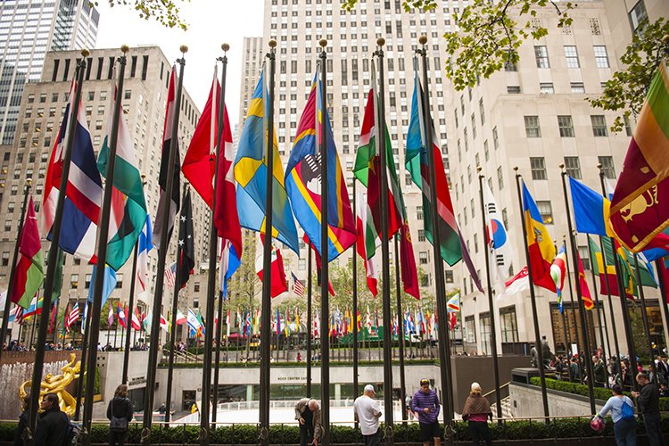

美国摄影学会名人堂成员
PSA Hall of Fame

- Cowles, Larry USA
PPSA:2003 EPSA:2005 MPSA:2011 GMPSA:2011 GMPSA/b:2015 GMPSA/s:2015 GMPSA/g:2017 - Aerts, Jozef Belgium
PPSA:1998 EPSA:1998 MPSA:2011 GMPSA:2012 GMPSA/b:2015 GMPSA/s:2015 - Teo, Giap Chiu Singapore
PPSA: 2005 EPSA: 2005 MPSA: 2014 GMPSA: 2014 GMPSA/b:2016 GMPSA/s:2016 - Riehle, Gunther
PPSA:2013 EPSA:2013 MPSA:2013 GMPSA:2013 GMPSA/b:2016 GMPSA/s:2017 - Anagnostidis, Marc France
PPSA: 1998 EPSA: 1998 MPSA: 2011 GMPSA: 2011 GMPSA/b: 2015 - Bailey, Carol A USA
PPSA: 2006 EPSA: 2006 MPSA: 2011 GMPSA: 2011 GMPSA/b: 2015 - Emmerich, Gerald H. Jr. USA
PPSA: 2000 EPSA: 2003 MPSA: 2011 GMPSA: 2011 GMPSA/b: 2016 - Kwan, Phillip T. R. Canada
PPSA: 2005 EPSA: 2010 MPSA: 2011 GMPSA: 2014 GMPSA/b: 2017 - Todd, Sharp USA
PPSA: 2004 EPSA: 2011 MPSA: 2011 GMPSA: 2013 GMPSA/b: 2017 - Amin, Shaikh M Pakistan
PPSA: 2001 EPSA: 2010 MPSA: 2011 GMPSA: 2015 - Anisimov, Sergey Russia
PPSA: 2015 EPSA: 2015 MPSA: 2015 GMPSA: 2016 - Bacle, Jean-Claude France
PPSA: 1998 EPSA: 1998 MPSA: 2012 GMPSA: 2012 - Barnett, William USA
PPSA: 2010 EPSA: 2010 MPSA: 2011 GMPSA: 2016 - Bohm, Gerhard Germany
PPSA: 2005 EPSA: 2005 MPSA: 2011 GMPSA: 2015 - Bunanta, Agatha Anne Indonesia
PPSA: 2009 EPSA: 2013 MPSA: 2014 GMPSA: 2015 - Chan, Ping Hing Wa Hong Kong
PPSA: 2011 EPSA: 2013 MPSA: 2014 GMPSA: 2015 - Dister, Richard Belgium
PPSA: 1998 EPSA: 1998 MPSA: 2012 GMPSA: 2016 - Franke, Luis Alberto Argentina
PPSA: 2007 EPSA: 2007 MPSA: 2011 GMPSA: 2012 - Fung, Alex Man-Yu Hong Kong
PPSA: 2014 EPSA: 2015 MPSA: 2016 GMPSA: 2017 - Gaberthuel, Walter Italy
PPSA: 2005 EPSA: 2013 MPSA: 2014 GMPSA: 2015 - Gho, Lay Tin Singapore
PPSA: 2007 EPSA: 2009 MPSA: 2012 GMPSA: 2012 - Gho, Peng Tjin Singapore
PPSA: 2011 EPSA: 2011 MPSA: 2011 GMPSA: 2011 - Greene, Fred France
PPSA: 1997 EPSA: 1997 MPSA: 2011 GMPSA: 2011 - Griffith, Robert M. USA
PPSA: 2008 EPSA: 2008 MPSA: 2012 GMPSA: 2013 - Hansen, Karl-Heinz Germany
PPSA: 2004 EPSA: 2006 MPSA: 2011 GMPSA: 2013 - Horsnell, Jenni Australia
PPSA: 2012 EPSA: 2012 MPSA: 2013 GMPSA: 2015 - Heng, Zee Kek Singapore
PPSA: 2013 EPSA: 2013 MPSA: 2015 GMPSA: 2017 - Jenkin, Barbara UK
PPSA: 2012 EPSA: 2013 MPSA: 2014 GMPSA: 2016 - Jenkin, Malcolm UK
PPSA: 2013 EPSA: 2014 MPSA: 2015 GMPSA: 2016 - Jerlemar, Nils-Erik Sweden
PPSA: 2006 EPSA: 2011 MPSA: 2011 GMPSA: 2017 - Kaeding, Wolfang Germany
PPSA: 2000 EPSA: 2006 MPSA: 2011 GMPSA: 2014 - Killen, Roy Australia
PPSA: 2012 EPSA: 2013 MPSA: 2014 GMPSA: 2015 - Kriete, Jane H. USA
PPSA: 2003 EPSA: 2003 MPSA: 2011 GMPSA: 2011 - Kriete, Russel A. USA
PPSA: 2003 EPSA: 2003 MPSA: 2011 GMPSA: 2011 - Lemmens, Jef Belgium
PPSA: 2010 EPSA: 2012 MPSA: 2013 GMPSA: 2015 - Lin, Dung Leung Hong Kong
PPSA: 2004 EPSA: 2006 MPSA: 2011 GMPSA: 2011 - Lower, Edgar R. USA
PPSA: 2005 EPSA: 2005 MPSA: 2011 GMPSA: 2015 - McCarthy, Dr. Lloyd A. USA
PPSA: 2006 EPSA: 2006 MPSA: 2011 GMPSA: 2011 - Meinberg, Volker Germany
PPSA: 2014 EPSA: 2014 MPSA: 2015 GMPSA: 2017 - Meisenheimer, Carol USA
PPSA: 2001 EPSA: 2004 MPSA: 2011 GMPSA: 2012 - Meisenheimer, David USA
PPSA: 2000 EPSA: 2003 MPSA: 2011 GMPSA: 2011 - Miller, Marvin USA
PPSA: 2012 EPSA: 2013 MPSA: 2014 GMPSA: 2016 - Miller, Mary USA
PPSA: 2012 EPSA: 2013 MPSA: 2014 GMPSA: 2016 - Palmer, Leo UK
PPSA: 2005 EPSA: 2009 MPSA: 2011 GMPSA: 2014 - Potter, Tony UK
PPSA: 2008 EPSA: 2011 MPSA: 2011 GMPSA: 2014 - Potts, Gary W. USA
PPSA: 2012 EPSA: 2013 MPSA: 2014 GMPSA: 2016 - Racey, Diane USA
PPSA: 2003 EPSA: 2004 MPSA: 2011 GMPSA: 2012 - Retelsdorf, Ekkehard Germany
PPSA: 1999 EPSA: 2010 MPSA: 2011 GMPSA: 2017 - Salim, Mohammad Ali USA
PPSA: 2010 EPSA: 2012 MPSA: 2013 GMPSA: 2016 - Samoyault, Guy B. Sr. France
PPSA: 2000 EPSA: 2000 MPSA: 2012 GMPSA: 2012 - Sams, Nancy USA
PPSA: 1997 EPSA: 2005 MPSA: 2012 GMPSA: 2012 - Schweden, Wolfgang Germany
PPSA: 2009 EPSA: 2009 MPSA: 2015 GMPSA: 2017 - Sieg, Albert L. USA
PPSA: 1997 EPSA: 1997 MPSA: 2011 GMPSA: 2015 - Stake, Jan-Thomas Sweden
PPSA: 2006 EPSA: 2006 MPSA: 2012 GMPSA: 2012 - Suszkiewicz, Ole Denmark
PPSA: 2006 EPSA: 2011 MPSA: 2011 GMPSA: 2016 - Tam, Joseph Australia
PPSA: 2013 EPSA: 2014 MPSA: 2014 GMPSA: 2016 - Van Mensel, Dre Belgium
PPSA: 2003 EPSA: 2004 MPSA: 2011 GMPSA: 2012 - Vaughan, Keith Canada
PPSA: 1999 EPSA: 1999 MPSA: 2012 GMPSA: 2012